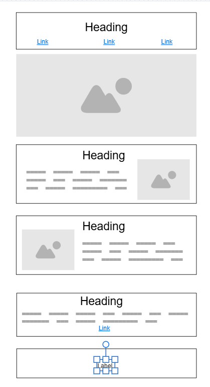
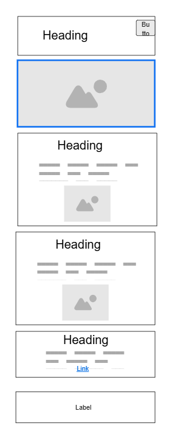

Site Name
KCD Tours
Reason: The KCD is a shortcut for the name of popular game Kingdom Come: Deliverance. Many people know this shortcut and they like to visit places from the game in real life.
Site Purpose
Purpose of this site is to help people to visit places where their favorite game Kingdom Come: Deliverance takes place. So it is mainly for people who play the game and want to see the landmarks and nature with their own eyes.
Scenarios
Scenario 1: I want to go on a trip to Bohemia where the KCD is taking place so I can visit the site in real life. But I don't know where they are.
Scenario 2: I want someone to show me the cool spots which still look similar today like they looked in KCD, which takes place 600 years ago.
Color Schema:
#AF8F3E
#222642
Typography
Roboto 700 for headers of all sizes.
Roboto 400 for the rest of text.
Wireframe
Wide view wireframe
Phone view wireframe
